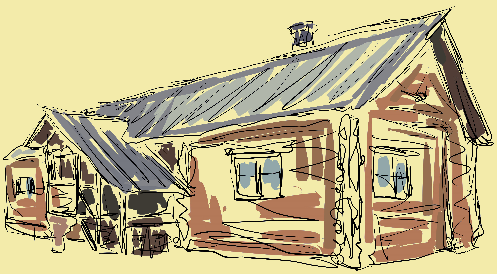

ДОМИК ПЕТРА I В КОЛОМЕНСКОМ – ЭТО УНИКАЛЬНЫЙ ПАМЯТНИК
ИСТОРИИ И АРХИТЕКТУРЫ И В ТО ЖЕ ВРЕМЯ МУЗЕЙ,
ГДЕ СОБРАНЫ
ИНТЕРЕСНЫЕ ЭКСПОНАТЫ, РАССКАЗЫВАЮЩИЕ О ЖИЗНИ ЦАРЯ-РЕФОРМАТОРА. СТРОЕНИЕ, ВОЗРАСТ КОТОРОГО БОЛЕЕ
ТРЕХСОТ ЛЕТ, НАХОДИТСЯ РЯДОМ С МУЗЕЕМ ДЕРЕВЯННОГО ЗОДЧЕСТВА В ЖИВОПИСНОМ МЕСТЕ, НА БЕРЕГУ РЕКИ ЖУЖИ (ПРИТОКЕ МОСКВЫ-РЕКИ).
В НАЧАЛЕ XVIII ВЕКА АРХАНГЕЛЬСК БЫЛ ЕДИНСТВЕННЫМ МОРСКИМ ПОРТОМ РОССИЙСКОГО ГОСУДАРСТВА. ЧТОБЫ ЗАЩИТИТЬ ГОРОД ОТ НАПАДЕНИЯ ШВЕДСКОГО ФЛОТА И ПЕРЕКРЫТЬ К НЕМУ ПОДСТУПЫ С МОРЯ, ПЕТР ПЕРВЫЙ ПОДПИСЫВАЕТ УКАЗ О СООРУЖЕНИИ НОВОДВИНСКОЙ КРЕПОСТИ В 20 ВЕРСТАХ ОТ ГОРОДА АРХАНГЕЛЬСКА.
ОПАСЕНИЯ ПЕТРА ПЕРВОГО БЫЛИ НЕ НАПРАСНЫМИ: ЛЕТОМ 1701 ГОДА, КОГДА КРЕПОСТЬ ЕЩЕ БЫЛА НЕ ДОСТРОЕНА, ШВЕДСКИЕ СУДА ПОДОШЛИ К УСТЬЮ СЕВЕРНОЙ ДВИНЫ И ПРЕДПРИНЯЛИ ПОПЫТКУ ЗАВЛАДЕТЬ АРХАНГЕЛЬСКИМ ФАРВАТЕРОМ. ОДНАКО, РУССКИЕ СОЛДАТЫ НЕ РАСТЕРЯЛИСЬ И СУМЕЛИ ОТРАЗИТЬ АТАКУ.
В 1702 ГОДУ ДЛЯ ПЕТРА ПЕРВОГО НА ОСТРОВЕ МАРКОВА, НЕДАЛЕКО ОТ СТРОЯЩЕЙСЯ КРЕПОСТИ, БЫЛ ПОСТРОЕН ДОМ, ГДЕ ИМПЕРАТОР ПРОВЕЛ ДВА МЕСЯЦА, КОНТРОЛИРУЯ СТРОИТЕЛЬСТВО ЦИТАДЕЛИ. КОГДА ЖЕ УГРОЗА СО СТОРОНЫ ШВЕДОВ ОТСТУПИЛА, ПЕТР ПОКИНУЛ СВОЮ СВЕТЛИЦУ.
НЕСКОЛЬКО ЛЕТ ДОМИК ПЕТРА ПЕРВОГО СТОЯЛ НА ПРЕЖНЕМ МЕСТЕ, НО ЧАСТЫЕ НАВОДНЕНИЯ РАЗРУШАЛИ ЕГО. В 1710 ГОДУ СТРОЕНИЕ, ПОСТРАДАВШЕЕ ОТ ЛЬДИН, ПЕРЕНЕСЛИ С ОСТРОВА К НОВОДВИНСКОЙ КРЕПОСТИ, ГДЕ ОНО НАХОДИЛОСЬ ДО КОНЦА XIX ВЕКА.

ПОЗЖЕ ПАМЯТНИК АРХИТЕКТУРЫ ПЕРЕНЕСЛИ В АРХАНГЕЛЬСК, А В 1934 ГОДУ ПО ИНИЦИАТИВЕ ДИРЕКТОРА МУЗЕЯ-ЗАПОВЕДНИКА ПЕТРА БАРАНОВСКОГО ДОМИК ПЕТРА ПЕРВОГО БЫЛ ПЕРЕВЕЗЕН В КОЛОМЕНСКОЕ (ЗДЕСЬ БУДУЩИЙ ИМПЕРАТОР ПРОВЕЛ СВОИ ДЕТСКИЕ ГОДЫ, А В ЮНОСТИ УСТРАИВАЛ ПОТЕШНЫЕ БОИ). МАСШТАБНАЯ РЕСТАВРАЦИЯ ПАМЯТНИКА АРХИТЕКТУРЫ ПРОШЛА В 2008 ГОДУ, В РЕЗУЛЬТАТЕ КОТОРОЙ СТРОЕНИЕ ПРИОБРЕЛО СВОЙ ПЕРВОНАЧАЛЬНЫЙ ВИД.
ДОМИК ПЕТРА I ПОСТРОЕН В ТРАДИЦИЯХ РУССКОГО ГРАЖДАНСКОГО ЗОДЧЕСТВА - ОН СЛОЖЕН ИЗ РУБЛЕНЫХ БРЁВЕН С ДВУСКАТНОЙ ТЕСАНОЙ КРЫШЕЙ. ОБРАТИТЕ ВНИМАНИЕ НА УЗОРЧАТЫЙ КРАЙ КРОВЛИ И ОФОРМЛЕНИЕ КРЫЛЬЦА - ЕГО СТОЙКИ И ОГРАЖДЕНИЯ УКРАШЕНЫ НЕЗАТЕЙЛИВОЙ РЕЗЬБОЙ - ДВОЙНАЯ АРКА С ВИСЯЧЕЙ ГИРЬКОЙ, КВАДРАТНЫЕ ПРОРЕЗИ МЕЖДУ ДОСКАМИ И ШИРОКИЕ ПЛАХИ, ОБРАМЛЯЮЩИЕ ОКНА. В ТОЖЕ ВРЕМЯ МЫ ВИДИМ И ЕВРОПЕЙСКИЕ НОВАЦИИ – БОЛЬШОЙ РАЗМЕР ОКОН, А ВМЕСТО СЛЮДЫ В ОКОННЫХ ПРОЕМАХ – СТЕКЛА.
В ДОМЕ БЫЛО НЕСКОЛЬКО ОТАПЛИВАЕМЫХ КОМНАТ - КАБИНЕТ И ОПОЧИВАЛЬНЯ, ДЕНЩИЦКАЯ И СТОЛОВАЯ. В НЕОТАПЛИВАЕМЫХ ПОМЕЩЕНИЯХ (СЕНИ И КОРИДОР) В НАСТОЯЩЕЕ ВРЕМЯ РАЗВЕРНУТА ИСТОРИЧЕСКАЯ ЭКСПОЗИЦИЯ, ПОДРОБНО РАССКАЗЫВАЮЩАЯ О БЫТЕ, ПРИВЫЧКАХ И ХАРАКТЕРЕ ИМПЕРАТОРА. ПРЕДСТАВЛЕНЫ МОДЕЛИ СУДОВ, ОРУЖИЕ ТОГО ВРЕМЕНИ И БОЕВЫЕ ЗНАМЕНА.